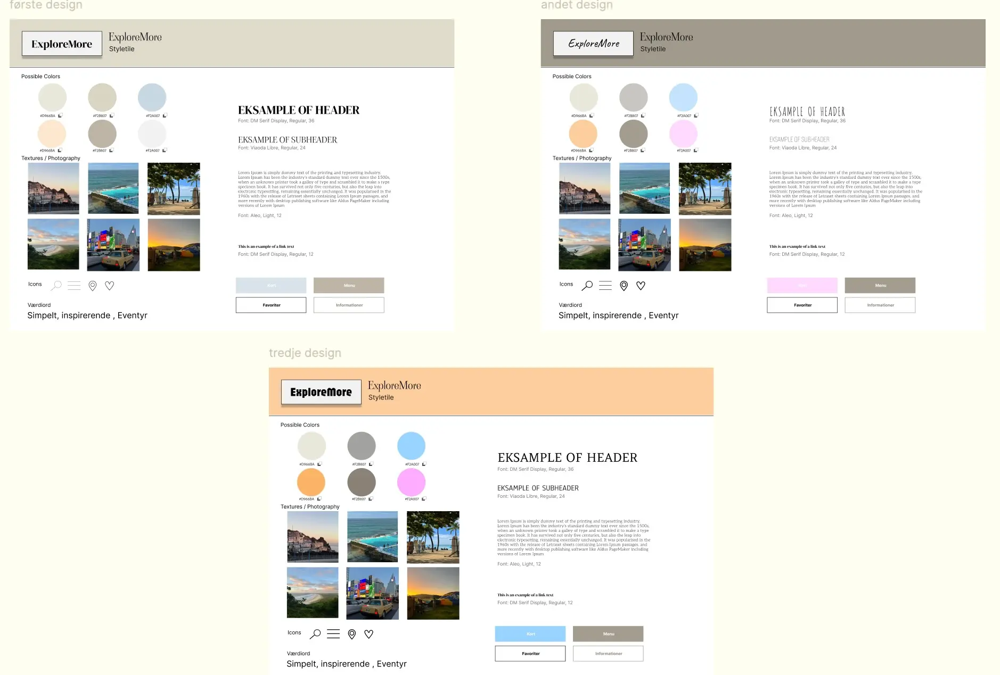

Tema 03
Grundlæggende UX/UI
Introduktion
I dette forløb fik vi frie rammer til at vælge et emne, som vi senere skulle udvikle et emnesite omkring. Gennem research og idéudvikling lærte vi at definere et klart emne, formål, identificere målgruppen og udarbejde og user stories.
Fremgangsmåde og processer
Her valgte jeg at lave en hjemmeside om rejser, med inspiration fra de rejser jeg har været på gennem mit liv. Her havde jeg en masse billede og erfaring jeg kunne inkludere på hjemmesiden.
Derudover arbejdede vi med farver og typografi, som skulle understøtte både sidens æstetik og brugervenlighed. Vi blev introduceret til centrale designkonventioner og gestaltprincipper - herunder lovene om nærhed, lighed, kontinuitet og lukkethed. Disse principper gav os en dybere forståelse for, hvordan visuelle elementer opfattes, og hvordan man kan skabe mere intuitive og brugervenlige designs.
Hvad har jeg lært på dette tema?
Gennem dette tema har jeg lært forskellige metoder og tests, som kan bruges til dataindsamling - både i researchfasen og under designprocessen. Jeg har blandt andet arbejdet med user stories, tænke-højt-test og 5-second test for at indsamle værdifuld feedback og indsigt. Derudover har jeg udarbejdet moodboards og styletiles, og lært at skabe klikbare prototyper i Figma. Det gør det muligt at teste brugervenlighed og designvalg, inden selve kodningen går i gang.